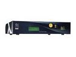

EyeBO
Status: Abandonné (depuis 2007)
Introduction
J’ai récupéré il y a quelque temps une machine assez marrante, une Eyebox One, de la société RightVision.
Bien que peu puissante (mais rien n’empêche de changer la carte-mère), elle présente l’intérêt d‘être rackable (format 2U), silencieuse, et doté d’une consommation ridicule.

Quel rapport avec ce nouveau projet, EyeBO ?
{kind=link}
Et bien en plus de ces qualités, cette box possède un écran LCD 20×4 avec keypad, 2 bargraphs, et 3 leds, ayant chacune 3 couleurs possibles.
Problème, ce LCD n’est supporté par aucun des projets libres existants, et est piloté par un binaire propriétaire dont la source n’est pas disponible.
EyeBO
EyeBO est donc un driver libre pour le projet LCDproc qui devrait permettre à terme de contrôler complètement le LCD, ainsi que les différents petits gadgets qui l’accompagnent.
Avancement du projet
14/10/06
Le driver est désormais disponible dans la version stable de lcdproc.
09/09/06
Vacances obligent, c’est avec quelques jours de retard que j’annonce qu’EyeBO a été intégré au projet LCDproc.
On peut le compiler directement depuis la version CVS disponible sur sourceforge.net. La documentation est-elle aussi en ligne.
19/08/06
Une nouvelle version est disponible, avec pas mal de bonnes choses, dont une documentation pour le driver.
Le tout est à télécharger ici même.
06/08/06
J’ai mis en ligne une première version du driver, à télécharger ici même.
26/07/06
Grâce à un petit patch pour le client LCDproc, celui-ci affiche maintenant la charge CPU totale, ainsi que la RAM utilisée, sur les 2 BarGraphs.
Ce patch est encore loin d‘être parfait (il existe encore un problème d’intervalle de mise à jour pour certains modes d’LCDproc), mais il a le mérite de s’intégrer facilement (et proprement) au projet existant.
Vue d’ensemble du module LCD
24/07/06
J’ai déjà accompli pas mal de travail. Il existe désormais une version BETA (mais stable) d’EyeBO qui permet d’utiliser l‘écran LCD ainsi que le Keypad avec LCDproc.
Deux vidéos sont disponibles, (mal)filmées par mes soins, avec un simple APN :
Démonstration du LCD
Affichage de la charge CPU sur un Bargraph